Описание
История объекта
Галерея
Архивные материалы
Цифровой архив промышленного наследия Санкт-Петербурга. Заводы, фабрики, инфраструктура — от Охтинского порохового завода Петра I до современности.
Красногвардейский район — один из старейших промышленных центров Санкт-Петербурга. С первой половины XVIII века берега Большой Охты и Невы стали ареной индустриального развития: здесь появились пороховые заводы, кирпичные мануфактуры, судостроительные верфи.
Наш проект — это попытка сохранить и представить в современном цифровом формате историю промышленных предприятий района: от Охтинского порохового завода, основанного Петром I в 1721 году, до Невского машиностроительного завода, выпустившего более 4500 паровозов и 200 боевых кораблей.
Мы собираем архивные фотографии, документы, чертежи и воспоминания — создавая многослойную картину индустриальной эпохи, которая определила облик этого района на столетия вперёд.
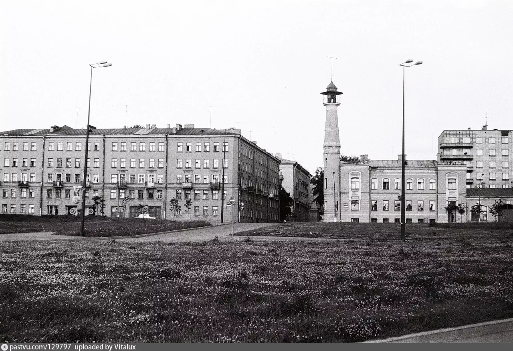
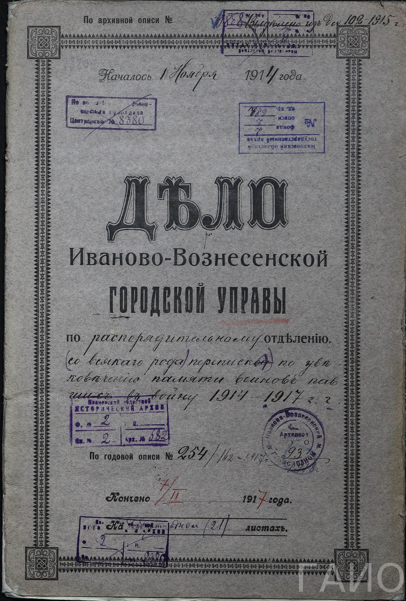
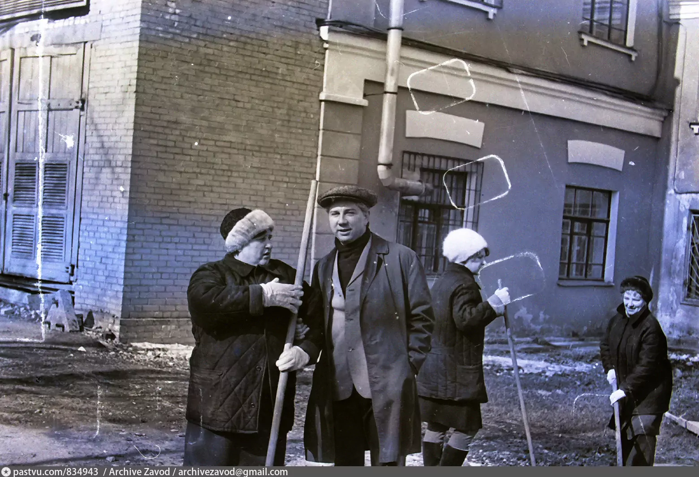
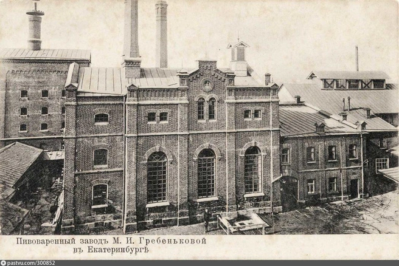
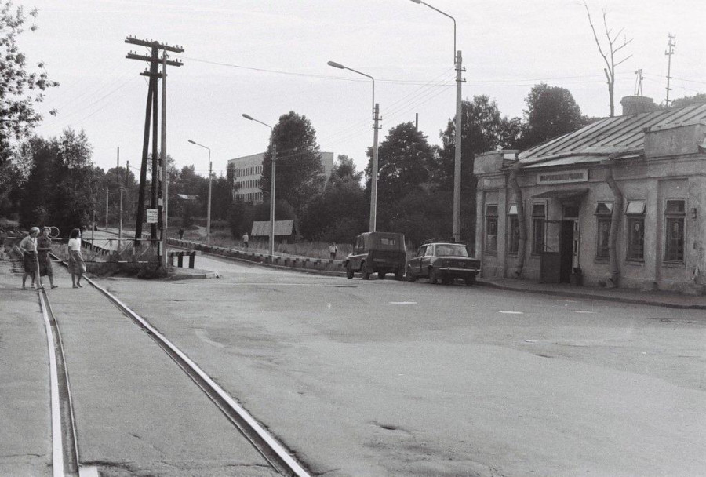
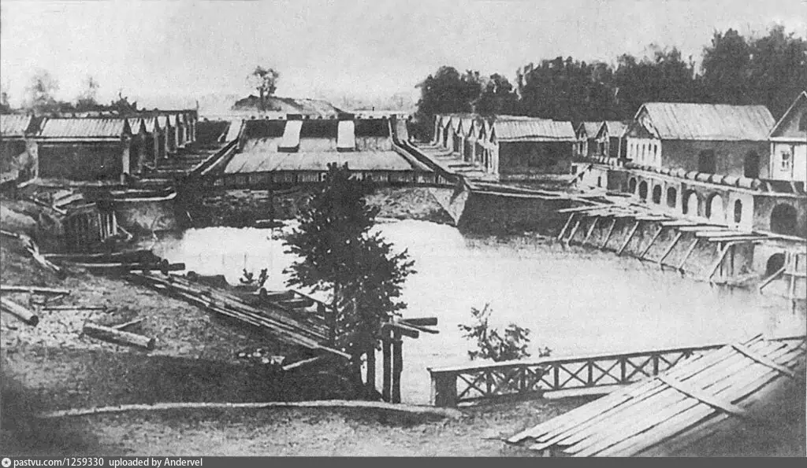
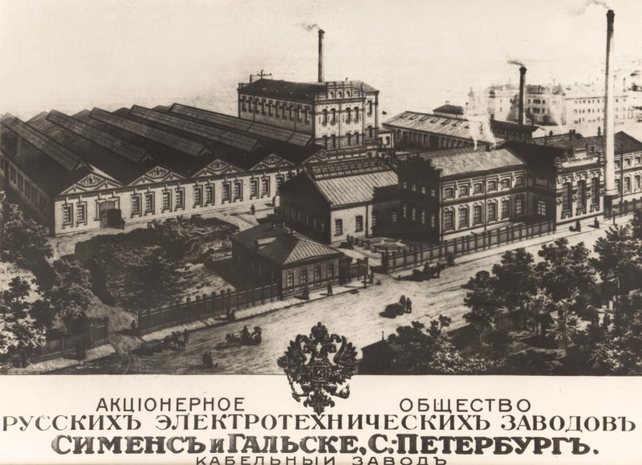
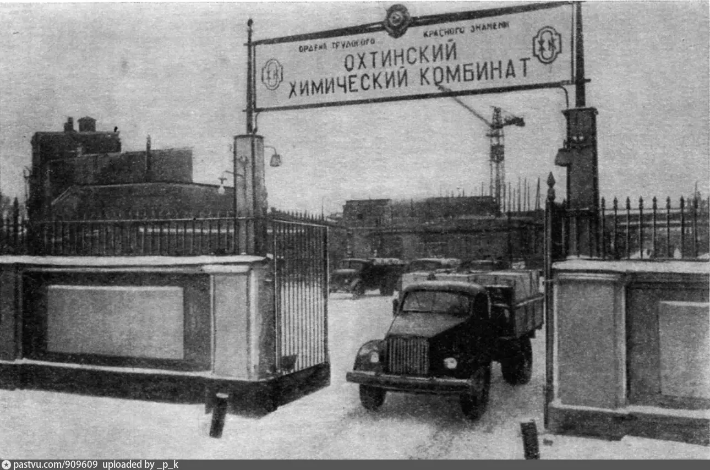
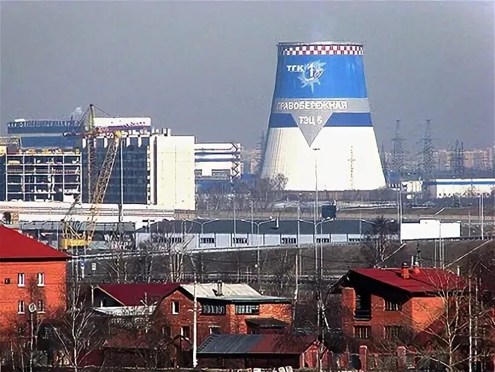
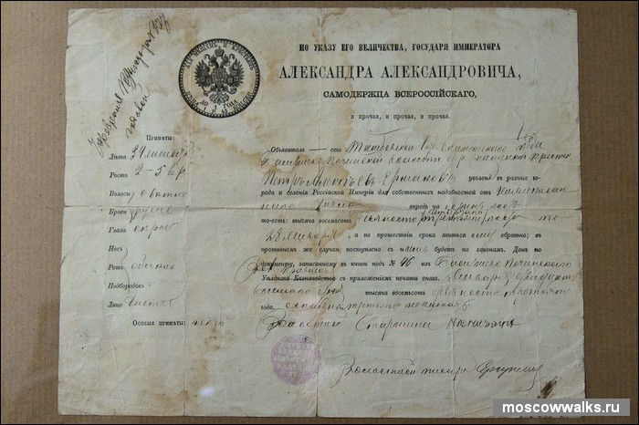
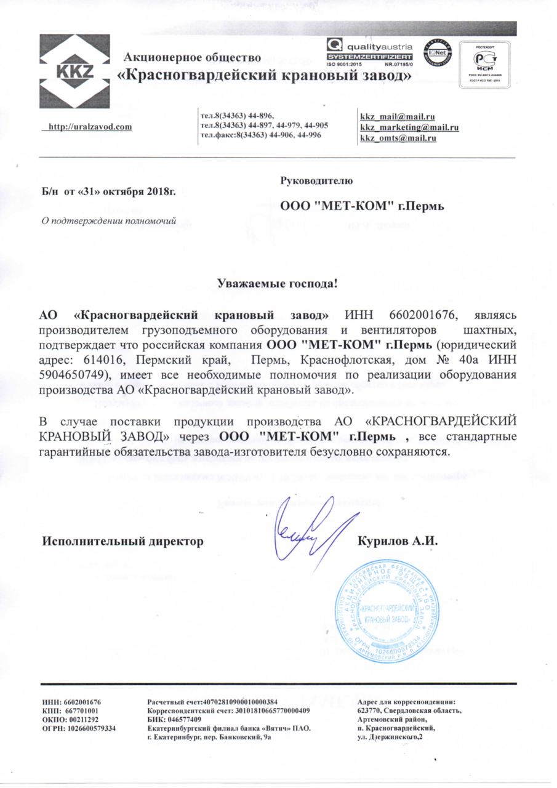
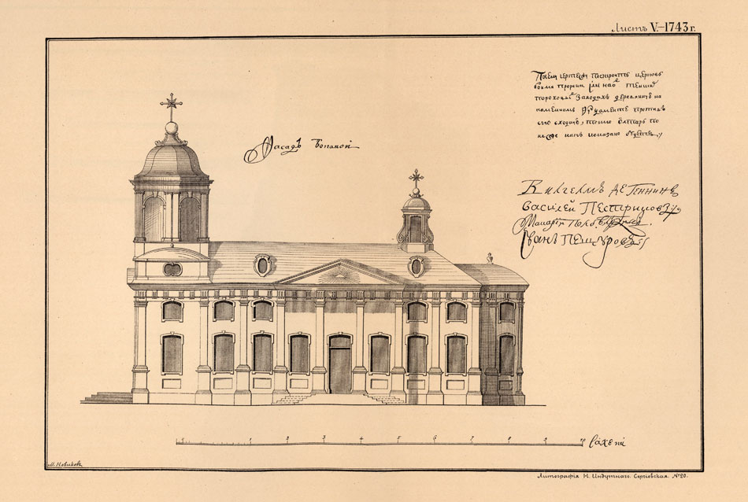